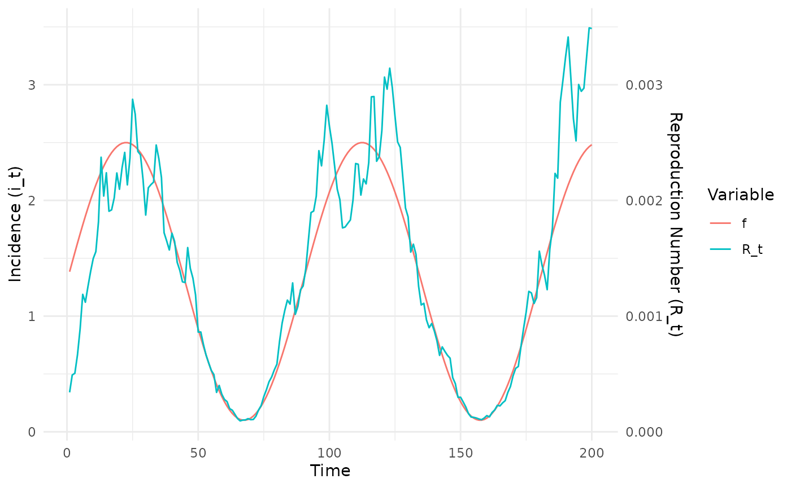
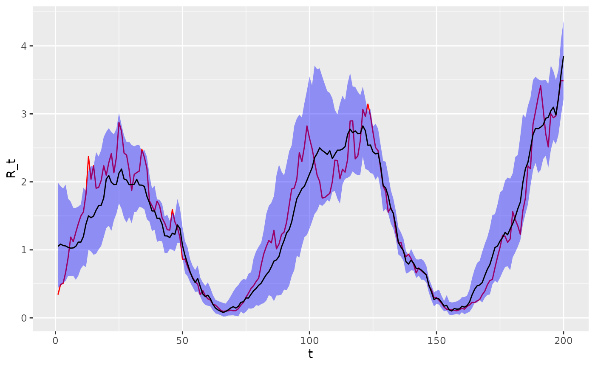

Fitting synthetic data including covariates
fitting_synthetic_data_including_covariates.Rmd
library(epidp)
library(ggplot2)
library(dplyr)
#>
#> Attaching package: 'dplyr'
#> The following objects are masked from 'package:stats':
#>
#> filter, lag
#> The following objects are masked from 'package:base':
#>
#> intersect, setdiff, setequal, union
library(magrittr)
library(purrr)
#>
#> Attaching package: 'purrr'
#> The following object is masked from 'package:magrittr':
#>
#> set_names
library(tidyr)
#>
#> Attaching package: 'tidyr'
#> The following object is masked from 'package:magrittr':
#>
#> extract
options(mc.cores=4)In this document, we explore how the incorporation of covariate information affects estimation of .
Added Gaussian noise around a sinusoidal covariate-driven mean
# define sinusoidal Rt with noise
rt_fun <- function(t, x) {
x[1] * exp(x[2])
}
nt <- 200
t <- 1:nt
f <- 1.3 + 1.2 * sin(4 * (pi / 180) * t)
g <- vector(length = nt)
g[1] <- rnorm(1, 0, 1)
rho <- 0.8
for(i in 2:length(g)) {
g[i] <- rho * g[i - 1] + rnorm(1, 0, 0.1)
}
X <- matrix(c(f, g), nrow = length(f), ncol = 2)
# simulation parameters
mean_si <- 6.5
sd_si <- 4.03
i_0 <- 10
# data frame of outputs
epidemic_df <- simulate_renewal_epidemic(rt_fun, nt, mean_si, sd_si, i_0, X)
# plot
epidemic_df %>%
mutate(f=f) %>%
select(-c(w_dist, lambda_t)) %>%
pivot_longer(c(R_t, f)) %>%
ggplot(aes(x = t, y = value, colour = name)) +
geom_line() +
scale_y_continuous(
name = "Incidence (i_t)",
sec.axis = sec_axis(~ . / 1000, name = "Reproduction Number (R_t)")
) +
labs(x = "Time", colour = "Variable") +
theme_minimal() We first try to estimate without covariate information. We now use a Stan version of EpiFilter to estimate the profile.
# fit model
fit <- fit_epifilter(
N=length(epidemic_df$i_t),
C=epidemic_df$i_t,
w=epidemic_df$w_dist,
iter=200
)
#> Warning: The largest R-hat is NA, indicating chains have not mixed.
#> Running the chains for more iterations may help. See
#> https://mc-stan.org/misc/warnings.html#r-hat
#> Warning: Bulk Effective Samples Size (ESS) is too low, indicating posterior means and medians may be unreliable.
#> Running the chains for more iterations may help. See
#> https://mc-stan.org/misc/warnings.html#bulk-ess
#> Warning: Tail Effective Samples Size (ESS) is too low, indicating posterior variances and tail quantiles may be unreliable.
#> Running the chains for more iterations may help. See
#> https://mc-stan.org/misc/warnings.html#tail-ess
# look at MCMC summaries
print(fit, c("sigma", "R"))
#> Inference for Stan model: epifilter.
#> 4 chains, each with iter=200; warmup=100; thin=1;
#> post-warmup draws per chain=100, total post-warmup draws=400.
#>
#> mean se_mean sd 2.5% 25% 50% 75% 97.5% n_eff Rhat
#> sigma 0.18 0.00 0.02 0.14 0.17 0.18 0.20 0.22 56 1.06
#> R[1] 1.05 0.03 0.47 0.31 0.69 0.96 1.33 2.13 267 1.00
#> R[2] 1.05 0.03 0.44 0.34 0.73 1.00 1.31 2.03 277 1.00
#> R[3] 1.04 0.03 0.40 0.41 0.77 0.98 1.28 1.95 252 1.00
#> R[4] 1.02 0.02 0.37 0.42 0.75 0.99 1.24 1.94 284 1.00
#> R[5] 0.98 0.02 0.35 0.40 0.73 0.94 1.19 1.83 311 1.01
#> R[6] 1.00 0.02 0.34 0.48 0.76 0.95 1.20 1.80 283 1.01
#> R[7] 1.01 0.02 0.33 0.52 0.77 0.97 1.19 1.76 280 1.01
#> R[8] 1.04 0.02 0.33 0.51 0.79 1.01 1.24 1.73 291 1.00
#> R[9] 1.07 0.02 0.33 0.49 0.82 1.04 1.30 1.71 289 1.01
#> R[10] 1.14 0.02 0.34 0.51 0.89 1.12 1.37 1.83 320 1.00
#> R[11] 1.25 0.02 0.35 0.63 1.01 1.22 1.49 1.96 325 1.00
#> R[12] 1.39 0.02 0.37 0.73 1.12 1.38 1.61 2.15 406 1.00
#> R[13] 1.49 0.02 0.37 0.88 1.22 1.46 1.71 2.32 373 0.99
#> R[14] 1.51 0.02 0.38 0.81 1.24 1.50 1.73 2.33 381 1.00
#> R[15] 1.57 0.02 0.39 0.85 1.31 1.54 1.81 2.44 353 1.00
#> R[16] 1.64 0.02 0.40 0.87 1.37 1.61 1.88 2.46 435 1.00
#> R[17] 1.69 0.02 0.38 0.97 1.44 1.68 1.93 2.51 356 1.01
#> R[18] 1.74 0.02 0.37 1.02 1.50 1.70 1.98 2.47 375 1.00
#> R[19] 1.88 0.02 0.38 1.17 1.63 1.84 2.11 2.74 446 1.00
#> R[20] 2.11 0.02 0.39 1.38 1.83 2.09 2.37 2.91 385 1.00
#> R[21] 2.13 0.02 0.38 1.44 1.90 2.13 2.34 2.98 494 1.00
#> R[22] 2.07 0.02 0.37 1.38 1.82 2.05 2.31 2.88 463 1.01
#> R[23] 2.04 0.02 0.36 1.41 1.80 2.00 2.23 2.85 427 1.00
#> R[24] 2.10 0.01 0.35 1.46 1.85 2.07 2.34 2.84 564 1.00
#> R[25] 2.19 0.01 0.34 1.56 1.93 2.16 2.40 2.91 738 1.00
#> R[26] 2.19 0.01 0.34 1.59 1.94 2.19 2.44 2.85 572 1.00
#> R[27] 2.06 0.01 0.31 1.47 1.83 2.06 2.28 2.68 633 0.99
#> R[28] 2.05 0.01 0.29 1.52 1.86 2.02 2.24 2.61 665 0.99
#> R[29] 1.97 0.01 0.29 1.45 1.76 1.96 2.15 2.58 556 1.00
#> R[30] 1.94 0.01 0.27 1.41 1.76 1.93 2.12 2.46 508 1.00
#> R[31] 1.90 0.01 0.25 1.45 1.73 1.90 2.07 2.35 338 1.01
#> R[32] 2.02 0.01 0.26 1.55 1.82 2.01 2.20 2.57 488 1.01
#> R[33] 2.00 0.01 0.25 1.53 1.84 2.00 2.14 2.50 410 1.00
#> R[34] 1.95 0.01 0.24 1.55 1.79 1.92 2.11 2.42 424 1.01
#> R[35] 1.96 0.01 0.23 1.57 1.79 1.94 2.11 2.44 434 1.00
#> R[36] 1.80 0.01 0.22 1.43 1.64 1.79 1.93 2.32 548 1.00
#> R[37] 1.71 0.01 0.20 1.34 1.55 1.70 1.85 2.11 411 1.00
#> R[38] 1.60 0.01 0.19 1.26 1.48 1.59 1.72 1.95 420 1.00
#> R[39] 1.59 0.01 0.18 1.27 1.47 1.58 1.70 1.92 376 1.00
#> R[40] 1.45 0.01 0.16 1.13 1.34 1.46 1.55 1.79 452 0.99
#> R[41] 1.44 0.01 0.16 1.11 1.34 1.44 1.54 1.76 353 1.00
#> R[42] 1.39 0.01 0.15 1.11 1.28 1.39 1.50 1.66 427 0.99
#> R[43] 1.20 0.01 0.14 0.94 1.11 1.19 1.30 1.48 366 1.00
#> R[44] 1.18 0.01 0.14 0.94 1.09 1.17 1.27 1.46 328 1.01
#> R[45] 1.19 0.01 0.13 0.94 1.09 1.19 1.28 1.44 401 1.00
#> R[46] 1.26 0.01 0.14 1.00 1.15 1.26 1.35 1.54 440 1.00
#> R[47] 1.21 0.01 0.14 0.95 1.11 1.21 1.31 1.50 357 1.00
#> R[48] 1.38 0.01 0.16 1.12 1.27 1.37 1.49 1.72 281 1.01
#> R[49] 1.33 0.01 0.14 1.09 1.23 1.32 1.43 1.64 327 1.00
#> R[50] 1.10 0.01 0.12 0.88 1.03 1.09 1.17 1.35 450 1.00
#> R[51] 0.90 0.01 0.12 0.69 0.82 0.90 0.98 1.14 416 1.00
#> R[52] 0.79 0.01 0.11 0.58 0.71 0.79 0.85 1.01 430 0.99
#> R[53] 0.69 0.00 0.10 0.51 0.62 0.68 0.75 0.89 426 0.99
#> R[54] 0.61 0.01 0.10 0.44 0.54 0.60 0.68 0.81 303 1.01
#> R[55] 0.54 0.00 0.10 0.36 0.47 0.53 0.60 0.74 488 1.01
#> R[56] 0.58 0.00 0.10 0.40 0.52 0.58 0.64 0.78 508 0.99
#> R[57] 0.45 0.00 0.08 0.31 0.40 0.44 0.49 0.60 413 1.00
#> R[58] 0.35 0.00 0.07 0.23 0.30 0.35 0.40 0.50 428 1.00
#> R[59] 0.31 0.00 0.07 0.18 0.25 0.31 0.35 0.46 490 1.00
#> R[60] 0.34 0.00 0.08 0.20 0.29 0.33 0.38 0.52 550 1.00
#> R[61] 0.29 0.00 0.08 0.16 0.24 0.28 0.33 0.47 521 1.00
#> R[62] 0.21 0.00 0.06 0.11 0.17 0.21 0.25 0.34 471 1.00
#> R[63] 0.16 0.00 0.06 0.07 0.12 0.16 0.20 0.28 436 1.00
#> R[64] 0.14 0.00 0.05 0.05 0.10 0.13 0.18 0.25 504 1.00
#> R[65] 0.11 0.00 0.05 0.04 0.07 0.10 0.14 0.24 221 1.03
#> R[66] 0.09 0.00 0.05 0.02 0.05 0.08 0.12 0.21 211 1.02
#> R[67] 0.09 0.00 0.05 0.01 0.05 0.08 0.11 0.22 232 1.01
#> R[68] 0.11 0.00 0.06 0.02 0.06 0.10 0.14 0.24 223 1.02
#> R[69] 0.14 0.00 0.07 0.03 0.09 0.13 0.18 0.30 232 1.02
#> R[70] 0.16 0.01 0.09 0.04 0.10 0.15 0.21 0.38 182 1.02
#> R[71] 0.16 0.01 0.10 0.03 0.09 0.15 0.21 0.41 132 1.03
#> R[72] 0.18 0.01 0.10 0.03 0.10 0.16 0.23 0.42 97 1.04
#> R[73] 0.21 0.01 0.12 0.04 0.12 0.20 0.27 0.48 102 1.03
#> R[74] 0.22 0.02 0.12 0.04 0.13 0.21 0.28 0.51 62 1.05
#> R[75] 0.24 0.02 0.13 0.03 0.14 0.22 0.32 0.56 35 1.10
#> R[76] 0.27 0.03 0.15 0.03 0.15 0.24 0.35 0.63 35 1.12
#> R[77] 0.30 0.03 0.18 0.03 0.16 0.28 0.40 0.74 32 1.14
#> R[78] 0.35 0.03 0.21 0.05 0.20 0.31 0.45 0.86 37 1.12
#> R[79] 0.40 0.04 0.24 0.06 0.22 0.36 0.53 0.96 31 1.14
#> R[80] 0.46 0.05 0.26 0.08 0.26 0.43 0.62 1.02 32 1.14
#> R[81] 0.53 0.05 0.28 0.10 0.32 0.50 0.73 1.12 34 1.15
#> R[82] 0.60 0.05 0.31 0.13 0.38 0.56 0.79 1.30 42 1.13
#> R[83] 0.68 0.05 0.33 0.15 0.43 0.64 0.87 1.44 48 1.12
#> R[84] 0.77 0.05 0.35 0.19 0.51 0.74 0.97 1.57 45 1.12
#> R[85] 0.83 0.05 0.38 0.21 0.56 0.80 1.05 1.65 51 1.10
#> R[86] 0.89 0.05 0.39 0.23 0.62 0.86 1.13 1.78 58 1.08
#> R[87] 0.97 0.05 0.42 0.23 0.66 0.93 1.24 1.91 62 1.07
#> R[88] 1.04 0.05 0.43 0.30 0.72 1.01 1.34 2.02 63 1.07
#> R[89] 1.13 0.06 0.46 0.34 0.79 1.09 1.43 2.10 55 1.08
#> R[90] 1.23 0.06 0.47 0.39 0.90 1.21 1.52 2.21 69 1.07
#> R[91] 1.34 0.06 0.50 0.42 1.01 1.29 1.67 2.41 62 1.07
#> R[92] 1.45 0.06 0.51 0.54 1.12 1.40 1.78 2.55 83 1.07
#> R[93] 1.57 0.05 0.53 0.69 1.20 1.49 1.93 2.78 96 1.06
#> R[94] 1.72 0.05 0.59 0.73 1.28 1.67 2.02 3.11 129 1.04
#> R[95] 1.87 0.05 0.60 0.88 1.44 1.83 2.19 3.10 137 1.03
#> R[96] 1.96 0.05 0.63 0.90 1.52 1.89 2.34 3.33 136 1.04
#> R[97] 2.09 0.05 0.63 0.99 1.61 2.02 2.47 3.46 154 1.04
#> R[98] 2.14 0.04 0.59 1.13 1.71 2.09 2.55 3.35 185 1.03
#> R[99] 2.21 0.04 0.59 1.17 1.79 2.16 2.64 3.41 246 1.02
#> R[100] 2.29 0.04 0.59 1.29 1.89 2.19 2.66 3.59 206 1.03
#> R[101] 2.35 0.04 0.58 1.35 1.93 2.29 2.74 3.53 238 1.03
#> R[102] 2.47 0.04 0.58 1.50 2.06 2.44 2.85 3.72 238 1.02
#> R[103] 2.53 0.03 0.54 1.62 2.13 2.49 2.84 3.71 273 1.02
#> R[104] 2.57 0.03 0.51 1.67 2.21 2.55 2.93 3.66 349 1.01
#> R[105] 2.52 0.03 0.48 1.67 2.16 2.49 2.83 3.47 317 1.01
#> R[106] 2.50 0.03 0.46 1.71 2.18 2.45 2.80 3.51 262 1.01
#> R[107] 2.45 0.02 0.44 1.73 2.14 2.42 2.70 3.43 378 1.01
#> R[108] 2.45 0.02 0.42 1.70 2.17 2.42 2.71 3.38 344 1.01
#> R[109] 2.45 0.02 0.40 1.78 2.17 2.43 2.68 3.28 361 1.01
#> R[110] 2.43 0.02 0.39 1.75 2.18 2.42 2.68 3.27 452 1.00
#> R[111] 2.45 0.02 0.40 1.71 2.17 2.45 2.68 3.26 650 1.00
#> R[112] 2.47 0.01 0.38 1.68 2.25 2.47 2.72 3.19 664 0.99
#> R[113] 2.51 0.02 0.37 1.87 2.28 2.47 2.76 3.25 497 1.00
#> R[114] 2.57 0.01 0.35 1.90 2.33 2.55 2.80 3.18 603 0.99
#> R[115] 2.75 0.02 0.36 2.06 2.50 2.74 2.97 3.48 557 0.99
#> R[116] 2.80 0.02 0.34 2.16 2.57 2.80 3.01 3.50 486 1.00
#> R[117] 2.79 0.02 0.34 2.18 2.53 2.78 3.03 3.45 423 1.00
#> R[118] 2.75 0.02 0.31 2.18 2.55 2.76 2.96 3.38 400 0.99
#> R[119] 2.75 0.02 0.31 2.16 2.54 2.75 2.95 3.40 413 1.01
#> R[120] 2.70 0.02 0.31 2.13 2.47 2.68 2.92 3.29 421 1.00
#> R[121] 2.87 0.02 0.28 2.37 2.66 2.86 3.05 3.45 346 0.99
#> R[122] 2.78 0.01 0.26 2.30 2.63 2.77 2.94 3.27 363 1.00
#> R[123] 2.56 0.01 0.24 2.14 2.37 2.54 2.70 3.07 420 1.00
#> R[124] 2.61 0.01 0.24 2.15 2.45 2.59 2.77 3.09 366 1.00
#> R[125] 2.49 0.01 0.20 2.12 2.35 2.47 2.62 2.88 280 1.01
#> R[126] 2.48 0.01 0.22 2.08 2.32 2.46 2.63 2.90 324 1.02
#> R[127] 2.47 0.01 0.19 2.10 2.34 2.48 2.61 2.81 422 1.01
#> R[128] 2.25 0.01 0.17 1.90 2.13 2.25 2.36 2.57 402 0.99
#> R[129] 1.93 0.01 0.17 1.64 1.82 1.92 2.04 2.28 364 1.00
#> R[130] 1.92 0.01 0.16 1.63 1.80 1.91 2.03 2.26 346 1.00
#> R[131] 1.83 0.01 0.14 1.57 1.73 1.83 1.92 2.11 355 1.01
#> R[132] 1.63 0.01 0.13 1.36 1.54 1.62 1.72 1.88 377 1.00
#> R[133] 1.54 0.01 0.12 1.32 1.46 1.54 1.62 1.79 368 1.01
#> R[134] 1.35 0.01 0.11 1.16 1.27 1.35 1.43 1.58 485 1.00
#> R[135] 1.10 0.00 0.10 0.92 1.04 1.10 1.17 1.29 429 1.00
#> R[136] 1.06 0.00 0.09 0.90 0.99 1.05 1.11 1.24 388 1.00
#> R[137] 1.01 0.00 0.09 0.84 0.95 1.01 1.07 1.19 417 1.00
#> R[138] 0.83 0.00 0.08 0.68 0.78 0.83 0.89 0.98 438 0.99
#> R[139] 0.79 0.00 0.07 0.66 0.74 0.79 0.84 0.94 351 1.00
#> R[140] 0.87 0.00 0.08 0.72 0.81 0.87 0.92 1.03 422 1.00
#> R[141] 0.81 0.00 0.08 0.66 0.76 0.80 0.86 0.97 369 0.99
#> R[142] 0.73 0.00 0.08 0.58 0.67 0.73 0.78 0.89 348 1.00
#> R[143] 0.74 0.00 0.08 0.61 0.68 0.74 0.79 0.90 402 1.00
#> R[144] 0.70 0.00 0.07 0.58 0.65 0.70 0.75 0.86 383 1.00
#> R[145] 0.68 0.00 0.07 0.55 0.63 0.67 0.72 0.84 379 1.01
#> R[146] 0.63 0.00 0.07 0.50 0.58 0.63 0.67 0.77 489 0.99
#> R[147] 0.48 0.00 0.06 0.37 0.44 0.48 0.51 0.60 558 1.00
#> R[148] 0.38 0.00 0.06 0.28 0.34 0.38 0.41 0.50 426 1.00
#> R[149] 0.27 0.00 0.05 0.18 0.24 0.27 0.30 0.38 498 1.00
#> R[150] 0.30 0.00 0.06 0.20 0.26 0.29 0.34 0.42 494 1.00
#> R[151] 0.29 0.00 0.06 0.19 0.25 0.29 0.33 0.42 486 1.00
#> R[152] 0.23 0.00 0.05 0.14 0.19 0.23 0.26 0.33 376 1.00
#> R[153] 0.18 0.00 0.04 0.10 0.14 0.17 0.21 0.27 500 1.00
#> R[154] 0.19 0.00 0.05 0.10 0.15 0.18 0.21 0.31 676 1.00
#> R[155] 0.12 0.00 0.05 0.04 0.09 0.12 0.15 0.22 497 1.00
#> R[156] 0.11 0.00 0.05 0.04 0.07 0.10 0.14 0.21 460 1.00
#> R[157] 0.14 0.00 0.05 0.05 0.10 0.13 0.16 0.27 511 1.00
#> R[158] 0.14 0.00 0.05 0.05 0.10 0.13 0.17 0.25 460 1.01
#> R[159] 0.15 0.00 0.06 0.05 0.10 0.14 0.19 0.27 452 1.01
#> R[160] 0.17 0.00 0.06 0.07 0.12 0.16 0.21 0.31 433 1.00
#> R[161] 0.16 0.00 0.07 0.05 0.11 0.15 0.20 0.31 304 1.01
#> R[162] 0.18 0.00 0.08 0.06 0.12 0.17 0.23 0.36 366 1.00
#> R[163] 0.22 0.01 0.10 0.06 0.14 0.20 0.28 0.43 325 1.00
#> R[164] 0.31 0.01 0.12 0.12 0.22 0.29 0.38 0.59 383 1.00
#> R[165] 0.40 0.01 0.14 0.17 0.29 0.38 0.49 0.69 434 1.00
#> R[166] 0.45 0.01 0.16 0.19 0.34 0.44 0.55 0.81 350 1.00
#> R[167] 0.49 0.01 0.17 0.20 0.37 0.47 0.60 0.84 417 1.00
#> R[168] 0.52 0.01 0.19 0.18 0.39 0.51 0.64 0.87 247 1.00
#> R[169] 0.62 0.01 0.21 0.28 0.47 0.59 0.75 1.07 371 1.00
#> R[170] 0.73 0.01 0.22 0.34 0.59 0.71 0.86 1.19 347 0.99
#> R[171] 0.82 0.01 0.25 0.39 0.65 0.79 0.96 1.36 320 1.00
#> R[172] 0.90 0.01 0.25 0.48 0.72 0.88 1.07 1.46 327 1.00
#> R[173] 1.02 0.01 0.26 0.56 0.85 0.99 1.17 1.63 461 0.99
#> R[174] 1.07 0.01 0.29 0.59 0.86 1.05 1.24 1.70 484 0.99
#> R[175] 1.14 0.02 0.31 0.64 0.91 1.12 1.33 1.89 420 0.99
#> R[176] 1.22 0.02 0.31 0.68 1.01 1.20 1.42 1.84 418 0.99
#> R[177] 1.26 0.02 0.31 0.73 1.04 1.24 1.46 1.98 381 1.00
#> R[178] 1.25 0.02 0.31 0.70 1.04 1.23 1.45 1.88 408 1.00
#> R[179] 1.31 0.02 0.31 0.75 1.08 1.28 1.51 1.99 424 1.00
#> R[180] 1.38 0.01 0.32 0.86 1.15 1.34 1.57 2.09 464 1.00
#> R[181] 1.48 0.02 0.34 0.94 1.24 1.46 1.68 2.19 499 1.00
#> R[182] 1.63 0.01 0.35 1.04 1.39 1.63 1.84 2.41 539 1.00
#> R[183] 1.76 0.02 0.38 1.08 1.50 1.76 1.99 2.67 638 1.01
#> R[184] 2.01 0.02 0.38 1.32 1.76 1.98 2.26 2.83 484 1.01
#> R[185] 2.25 0.02 0.39 1.48 1.99 2.23 2.49 3.12 541 1.01
#> R[186] 2.37 0.02 0.40 1.63 2.11 2.32 2.60 3.18 460 1.00
#> R[187] 2.58 0.02 0.36 1.96 2.32 2.55 2.80 3.32 548 1.00
#> R[188] 2.78 0.02 0.36 2.15 2.53 2.78 3.01 3.50 508 1.00
#> R[189] 2.81 0.02 0.35 2.15 2.56 2.81 3.07 3.51 389 1.00
#> R[190] 2.85 0.02 0.36 2.22 2.57 2.83 3.12 3.52 396 1.00
#> R[191] 2.84 0.02 0.34 2.22 2.61 2.86 3.09 3.43 426 1.00
#> R[192] 2.95 0.02 0.32 2.32 2.73 2.95 3.16 3.54 402 1.01
#> R[193] 2.94 0.01 0.31 2.35 2.73 2.95 3.14 3.51 485 1.00
#> R[194] 2.94 0.01 0.29 2.36 2.76 2.96 3.13 3.44 444 1.00
#> R[195] 3.09 0.02 0.29 2.53 2.88 3.07 3.28 3.66 296 1.00
#> R[196] 3.15 0.02 0.27 2.63 2.97 3.12 3.33 3.67 246 1.01
#> R[197] 3.04 0.02 0.27 2.57 2.85 3.04 3.22 3.63 267 1.01
#> R[198] 3.26 0.01 0.27 2.69 3.08 3.25 3.43 3.77 377 1.00
#> R[199] 3.58 0.01 0.28 3.05 3.38 3.57 3.79 4.11 362 1.01
#> R[200] 3.83 0.02 0.30 3.33 3.64 3.81 4.02 4.42 344 1.02
#>
#> Samples were drawn using NUTS(diag_e) at Mon Aug 12 16:39:28 2024.
#> For each parameter, n_eff is a crude measure of effective sample size,
#> and Rhat is the potential scale reduction factor on split chains (at
#> convergence, Rhat=1).We now overlay the estimated versus the actual values. The estimated values coincide reasonably with the true values.
# extract posterior quantiles
R_draws <- rstan::extract(fit, "R")[[1]]
lower <- apply(R_draws, 2, function(x) quantile(x, 0.025))
middle <- apply(R_draws, 2, function(x) quantile(x, 0.5))
upper <- apply(R_draws, 2, function(x) quantile(x, 0.975))
# plot
epidemic_df %>%
mutate(
lower=lower,
middle=middle,
upper=upper
) %>%
select(t, R_t, lower, middle, upper) %>%
ggplot(aes(x=t, y=R_t)) +
geom_line(colour="red") +
geom_ribbon(aes(ymin=lower, ymax=upper), fill="blue", alpha=0.4) +
geom_line(aes(y=middle))